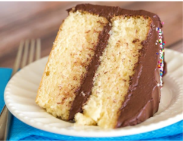

About Chi's Cake
Hello and welcome! I'm Michelle and i believe anyone can learn to confidently make recipes worthy of celebration. "i made your pavlova recipe today and it was delicious! As usual, your recipe was easy to follow. There's four of us here and there's only one third left. It'll be gone soon. Thanks for another great recipe!" We tried your weeknight bolognese recipe yesterday! Ohmygosh, it was so good. My husband is still talking about it this morning. Michelle, just wanted to tell you I made your beef stew recipe this weekend. Just incredible !! The oven method was perfect and truly brought out the flavours. I just wanted to send you a quick email to tell you that i really love your recipes. I always loved to cook, but I haven't been much of a baker. I have been baking more and more and i find that your recipes are always the best. Imagine your friend and coworkers gobbling up those special treats that you made for them. Imagine that the dish you made for Thanksgiving or those cookies for Christmas are all that anyone is talking about and EVERYONE has asked you for the recipe. . .